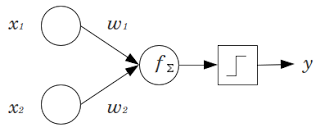
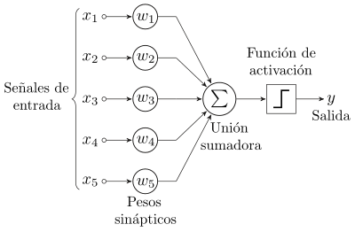

Introducción al Perceptron con Python
Posted on dom 07 enero 2018 in Tutorial Python • 3 min read
Este artículo se basa en un artículo en inglés The Perceptron .
Un perceptron es un clasificador y uno de los más simples de la Red Neuronal Artificial . Lo que se busca es tomar las características de una red neuronal biológica, y replicarla como un algoritmo.
En la siguiente figura se muestra una red neuronal de dos entradas, cada entrada tiene su peso, luego se suman y la función de activación genera una salida.

La ecuación mátemática sería algo como:
y = FuncionActivacion(x1*w1+x2*w2)
La función de activación para una onda cuadrada es:

Donde la función de activación puede ser una onda cuadrada (hay más funciones de activación).
Acá otro perceptron con 5 señales de entrada.

A continuación se muestra el código:
#!/usr/bin/env python3
# coding: utf-8
# # Importar librerías
from pylab import rand,plot,show,norm
# # Clase Perceptron
class Perceptron:
def __init__(self):
""" inicialización del perceptron """
self.w = rand(2)*2-1 # pesos
self.tasaAprendizaje = 0.1
def respuesta(self,x):
""" saldia del perceptron """
y = x[0]*self.w[0]+x[1]*self.w[1] # producto punto entre w y x
if y >= 0:
return 1
else:
return -1
def actualizarPesos(self,x,iterError):
"""
Actualizar estatus de los pesos, w en un tiempo t+1 es w(t+1)= w(t) + learningRate*(d-r)*x
donde d es la salida deseada y r la respuesta del perceptro, iteError es la diferencia entre
d y r (d-r).
"""
self.w[0] += self.tasaAprendizaje*iterError*x[0]
self.w[1] += self.tasaAprendizaje*iterError*x[1]
def entrenamiento(self,data):
"""
Entra todo el vector en los datos, cada vector en los datos debe tener 3 elementos,
el tercer elemento (x[2]) debe ser etiquetado (salida deseada)
"""
learned = False
iteration = 0
while not learned:
globalError = 0.0
for x in data: # por cada muestra
r = self.respuesta(x)
if x[2] != r: # si tenemos un respuesta equivocada
iterError = x[2] - r # respuesta deseada-respuesta actual
self.actualizarPesos(x,iterError)
globalError += abs(iterError)
iteration += 1
if globalError == 0.0 or iteration >= 100: # detiene por el criterio
print ('iterations {}'.format(iteration))
learned = True # detiene el aprendizaje
def datosGenerados(n):
"""
genera un conjunto de datos, de dos dimensiones, linealmente separados con
n muestras. El tercer elemento de la muestra es la etiqueta.
"""
xb = (rand(n)*2-1)/2-0.5
yb = (rand(n)*2-1)/2+0.5
xr = (rand(n)*2-1)/2+0.5
yr = (rand(n)*2-1)/2-0.5
inputs = []
for i in range(len(xb)):
inputs.append([xb[i],yb[i],1])
inputs.append([xr[i],yr[i],-1])
return inputs
trainset = datosGenerados(30) # generación de datos para entrenar
perceptron = Perceptron() # Instancia del perceptron
perceptron.entrenamiento(trainset) # Entrenamiento con el conjunto de datos
testset = datosGenerados(20) # conjunto de datos para el test.
# Prueba del perceptron
for x in testset:
r = perceptron.respuesta(x)
if r != x[2]: # Si la respuesta no es correcta
print ('error')
if r == 1:
plot(x[0],x[1],'ob')
else:
plot(x[0],x[1],'or')
# Se gráfica una línea de separación, la cual es ortogonal a w.
n = norm(perceptron.w)
ww = perceptron.w/n
ww1 = [ww[1],-ww[0]]
ww2 = [-ww[1],ww[0]]
plot([ww1[0], ww2[0]],[ww1[1], ww2[1]],'--k')
show()
# ##
Al ejecutar el script se tiene la siguiente gráfica:

Los puntos azules pertenecen a la primera clase y los rojos pertenecen a la segunda. La línea punteada es la línea de separación que el perceptrón aprendió durante el entrenamiento.
En siguientes artículos se seguirá trabajando con el perceptron pero usando librerías como scikit-learn y tensorflow.
El script en python y el notebook de jupyter lo pueden descargar de github.
¡Haz tu donativo! Si te gustó el artículo puedes realizar un donativo con Bitcoin (BTC) usando la billetera digital de tu preferencia a la siguiente dirección: 17MtNybhdkA9GV3UNS6BTwPcuhjXoPrSzV
O Escaneando el código QR desde la billetera: